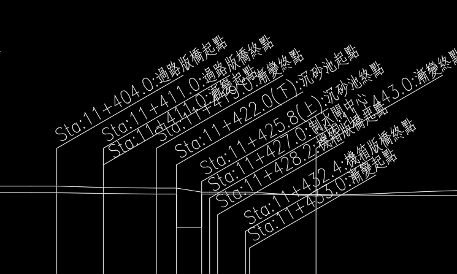
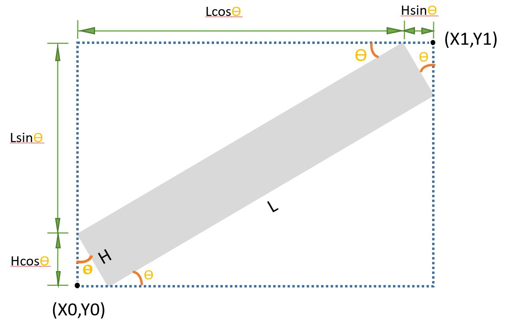

🙌前言
👉縱斷面發展來源
AutoCAD VBA
縱斷面繪製自動化
🐞開發過程中的小問題
縱斷面繪製時會針對需要文字說明的樁號進行插旗繪製，可能會造成插旗文字出現重疊的原因有兩個
- 插旗說明樁號距離太近(0+200、0+205)
- 繪製X軸比例太小(1:1000 vs 1:5000)
繪製過程會考量圖紙輸出的舒適度，最小字高通常會以3.4.5為原則，文字說明會固定以30度呈現
當距離太近時可以透過調整X軸比例讓間距拉開，橫向會重疊的時候就進行上下位移，方便讀者觀看。
因此本篇就是要透過VBA抓取說明文字的外框及下線，自動調整文字重疊內容，以下進行說明:
📌範例說明

Fig1. 插旗文字說明
🔷流程解說
一般插旗文字都是屬於旋轉至第一象限的內容(0度~90度)
- 透過CAD VBA內建指令GetBoundingBox找到邊界點。
- 透過幾何圖形學及三角函數關係進行列式。
- 用一元二次聯立方程式解析參數。
- 代回原本第一象限的正確點位。
- 引入clsACAD進行LINE物件繪製。
🌟幾何關係
\[ Hcos\theta+Lsin\theta=Y_1-Y_0=const.
\] \[
Hsin\theta+Lcos\theta=X_1-X_0=const. \]
正確角點:
| 左下 |
\[ X_0+Hsin\theta \] |
\[ Y_0 \] |
| 右下 |
\[ X_1 \] |
\[ Y_1-Hcos\theta \] |
| 左上 |
\[ X_0 \] |
\[ Y_0+Hcos\theta \] |
| 右上 |
\[ X_1-Hsin\theta \] |
\[ Y_1 \] |

Fig2. 文字外框、點位幾何關係
Fig3. 上下底線繪製成果
⚡程式碼
模組(module)
1
2
3
4
5
6
7
8
9
10
11
12
13
14
15
16
17
18
19
20
21
22
23
24
25
26
27
28
29
30
31
32
33
34
35
36
37
38
39
40
41
42
43
44
45
46
47
48
49
50
51
52
53
54
55
56
57
58
59
60
61
62
63
64
65
66
67
68
69
70
71
72
73
74
75
|
Sub test_getBoundingBox()
Dim CAD As New clsACAD
Dim L As Double
Dim H As Double
Set sset2 = CAD.CreateSSET()
Set entobj = sset2(0)
rotate_degree = entobj.Rotation * 180 / 3.14
Call entobj.GetBoundingBox(Min, Max)
X0 = Min(0)
Y0 = Min(1)
X1 = Max(0)
Y1 = Max(1)
Call CAD.AddPoint(Min)
Call CAD.AddPoint(Max)
a1 = Sin(rotate_degree / 180 * 3.14)
b1 = Cos(rotate_degree / 180 * 3.14)
c1 = Y1 - Y0
a2 = Cos(rotate_degree / 180 * 3.14)
b2 = Sin(rotate_degree / 180 * 3.14)
c2 = X1 - X0
Call SolveLinearEquations(a1, b1, c1, a2, b2, c2, L, H)
Xpt_LD = X0 + H * Sin(rotate_degree / 180 * 3.14)
Ypt_LD = Y0
Xpt_RD = X1
Ypt_RD = Y1 - H * Cos(rotate_degree / 180 * 3.14)
Call CAD.AddLineCO(Xpt_LD, Ypt_LD, Xpt_RD, Ypt_RD)
Xpt_LU = X0
Ypt_LU = Y0 + H * Cos(rotate_degree / 180 * 3.14)
Xpt_RU = X1 - H * Sin(rotate_degree / 180 * 3.14)
Ypt_RU = Y1
Call CAD.AddLineCO(Xpt_LU, Ypt_LU, Xpt_RU, Ypt_RU)
End Sub
Function SolveLinearEquations(ByVal a1 As Double, ByVal b1 As Double, ByVal c1 As Double, ByVal a2 As Double, ByVal b2 As Double, ByVal c2 As Double, ByRef x As Double, ByRef y As Double) As Boolean
Dim determinant As Double
determinant = a1 * b2 - a2 * b1
If determinant = 0 Then
SolveLinearEquations = False
Else
x = (c1 * b2 - c2 * b1) / determinant
y = (a1 * c2 - a2 * c1) / determinant
SolveLinearEquations = True
End If
End Function
|
物件類別模組(clsACAD)
1
2
3
4
5
6
7
8
9
10
11
12
13
14
15
16
17
18
19
20
21
22
23
24
25
26
27
28
29
30
31
32
33
34
35
36
37
38
39
40
41
42
43
44
45
46
47
48
49
50
51
52
53
54
55
56
57
58
59
60
61
62
63
64
65
66
67
68
69
70
71
72
73
74
75
76
77
78
79
80
81
82
83
84
85
86
87
88
89
90
91
92
93
94
95
96
97
98
99
100
101
102
103
104
105
106
107
108
109
110
111
112
|
Private mo As Object
Private pa As Object
Public acadDoc As Object
Public CADVer As String
Private Sub Class_Initialize()
strCAD = "AutoCAD.application"
CADVer = "AUTOCAD"
Call CADInit(strCAD)
End Sub
Private Sub CADInit(ByVal strCAD As String)
On Error Resume Next
Set acadApp = GetObject(, strCAD)
If Err <> 0 Then Set acadApp = CreateObject(strCAD)
acadApp.Visible = True
On Error GoTo 0
Set mo = acadApp.ActiveDocument.ModelSpace
Set pa = acadApp.ActiveDocument.PaperSpace
Set acadDoc = acadApp.ActiveDocument
End Sub
Function CreateSSET(Optional ByVal sname As String = "SS1", Optional ByVal ftypetmp As Variant = "", Optional ByVal fdatatmp As Variant = "")
Dim FilterType() As Integer
Dim FilterData() As Variant
On Error Resume Next: acadDoc.SelectionSets(sname).Delete: On Error GoTo 0
Set sset = acadDoc.SelectionSets.Add(sname)
If ftypetmp = "" Then
sset.SelectOnScreen
Else
ft = Split(ftypetmp, ",")
fd = Split(fdatatmp, ",")
ReDim FilterType(0 To UBound(ft))
ReDim FilterData(0 To UBound(fd))
For i = 0 To UBound(ft)
FilterType(i) = ft(i)
FilterData(i) = fd(i)
Next
sset.SelectOnScreen FilterType, FilterData
End If
Set CreateSSET = sset
End Function
Function AddPoint(pt) As Object
If CADVer = "ICAD" Then
Set AddPoint = mo.AddPointEntity(tranPoint(pt))
Else
Set AddPoint = mo.AddPoint(tranPoint(pt))
End If
End Function
Function AddLineCO(X1, Y1, X2, Y2) As Object
Dim spt(2) As Double
Dim ept(2) As Double
spt(0) = X1: spt(1) = Y1
ept(0) = X2: ept(1) = Y2
Set AddLineCO = AddLine(spt, ept)
End Function
Function AddLine(spt, ept) As Object
Set AddLine = mo.AddLine(tranPoint(spt), tranPoint(ept))
End Function
Function tranPoint(ByVal CADpt)
If CADVer <> "ICAD" Then tranPoint = CADpt: Exit Function
Set tranPoint = Library.CreatePoint(CADpt(0), CADpt(1), CADpt(2))
End Function
|
👉後續利用
確認下一文字外框點是否位於這次文字框中，進行重疊文字判識，如不符合則再上下位移即可。
1
2
3
4
5
6
7
8
9
10
11
12
13
14
15
16
17
|
Function checkPtFromBorders(midX,midY,BorderPTs) as boolean
Border_minX = CDbl(BorderPTs(0))
Border_minY = CDbl(BorderPTs(1))
Border_maxX = CDbl(BorderPTs(2))
Border_maxY = CDbl(BorderPTs(3))
If midX >= Border_minX And midX <= Border_maxX And midY >= Border_minY And midY <= Border_maxY Then
checkPtFromBorders = true
Exit For
End If
End Function
|